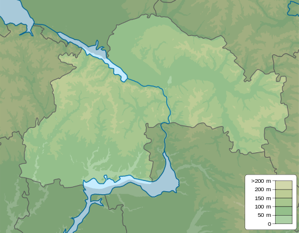

Про проєкт
Робота усіх підприємств так чи інакше не обходиться без использова-ния води для промислових потреб. Основними джерелами споживаної води для технічних потреб є води річок Саксагань і Ингулец. Річки Игулец і Саксагань є базовими питного водопостачання міста. Місто Кривий ріг ще і великий культурний і освітній центр. У місті діє музичний драматичний театр, ляльковий театр, театр "Академія руху", є великий історико-краєзнавчий музей, цирк. Створена Криворізька національна академія, що включає 5 образовательно-исследовательских інститутів. Структурною особливістю міста є то, що він витягнутий уздовж родовища залізних руд, яке простягається майже в меридіональному напрямі. Звідси і унікальна протяжність міських земель- з півночі від меж Північного Гока до південних меж Ингулецкого Гока більше 150 км. Через місто протікає дві річки басейну р. Дніпро: р. Ингулец относя-щаяся до середніх річок і, що впадає в неї, річка - Саксагань.